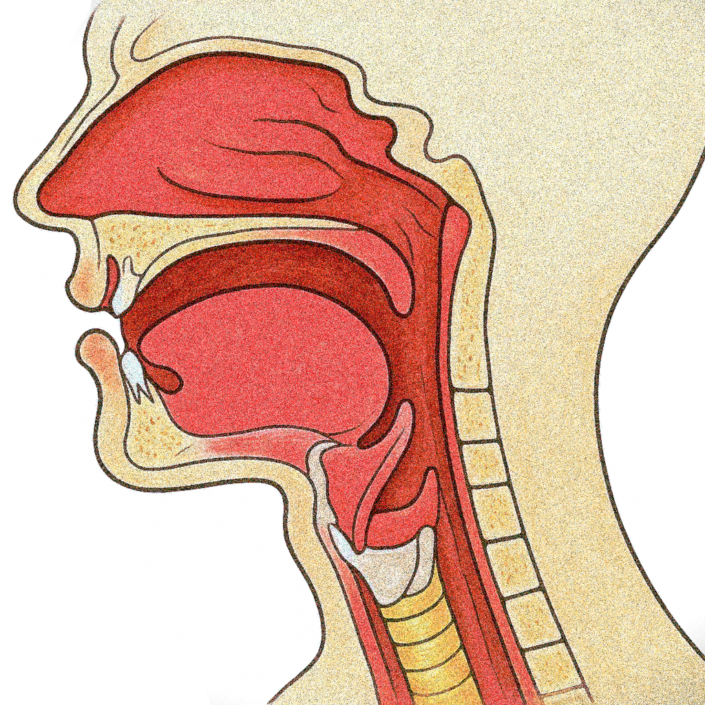
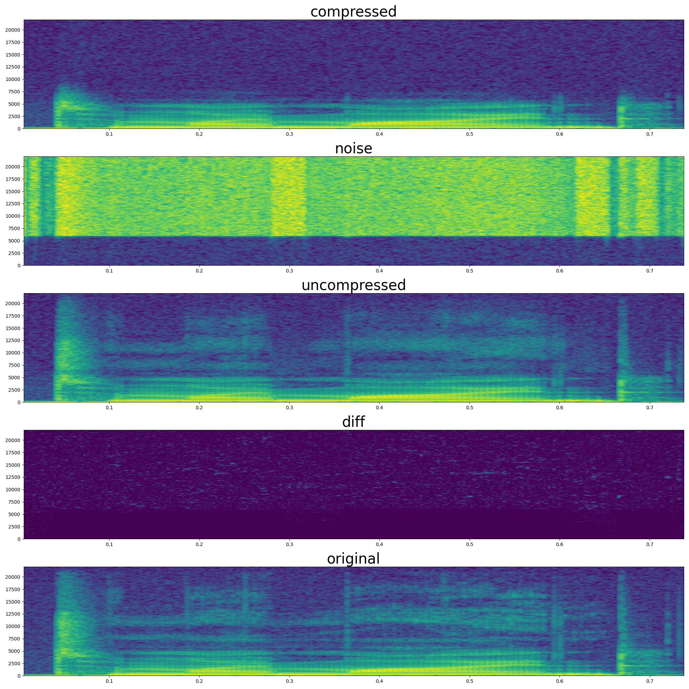
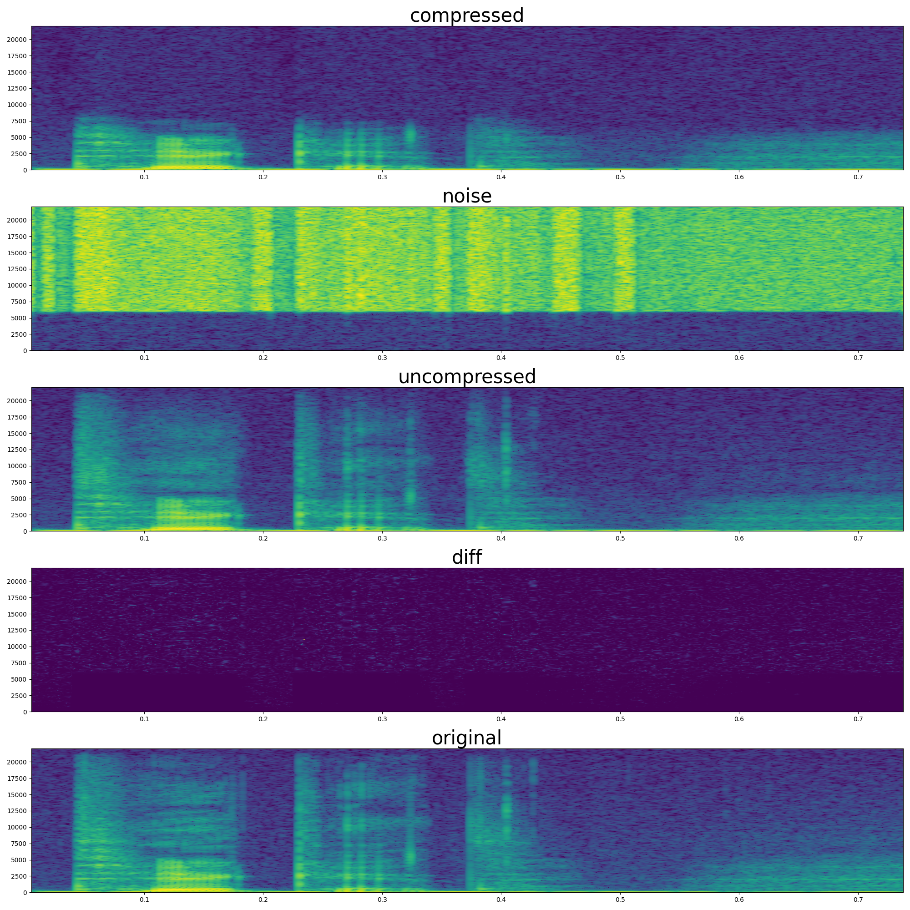
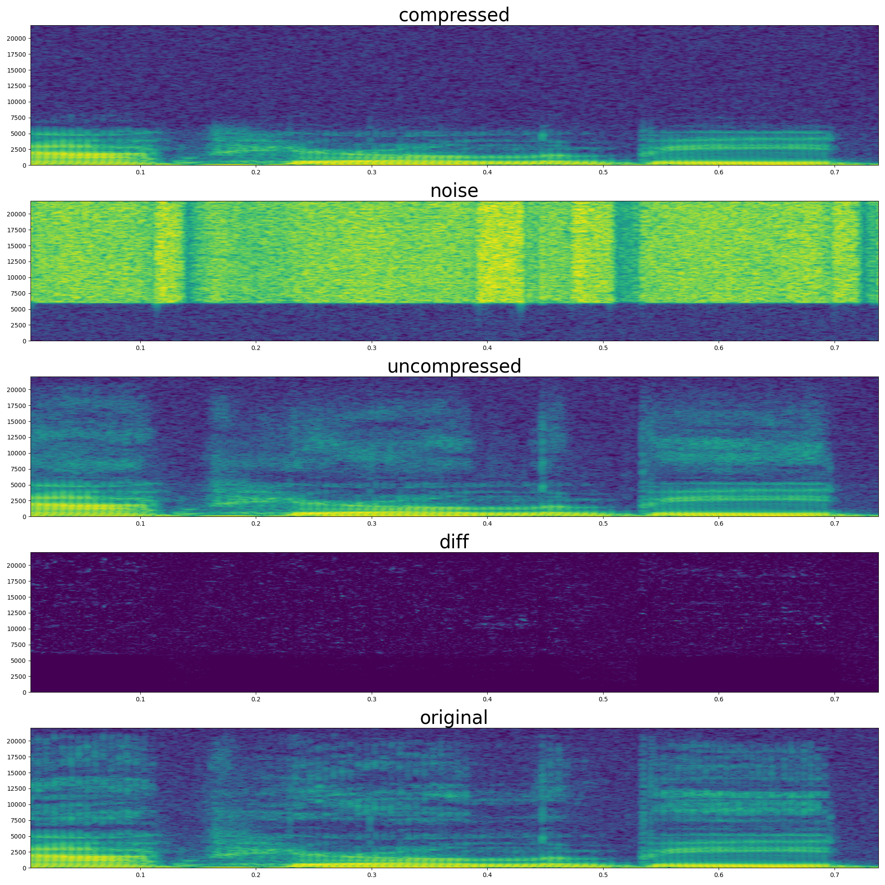
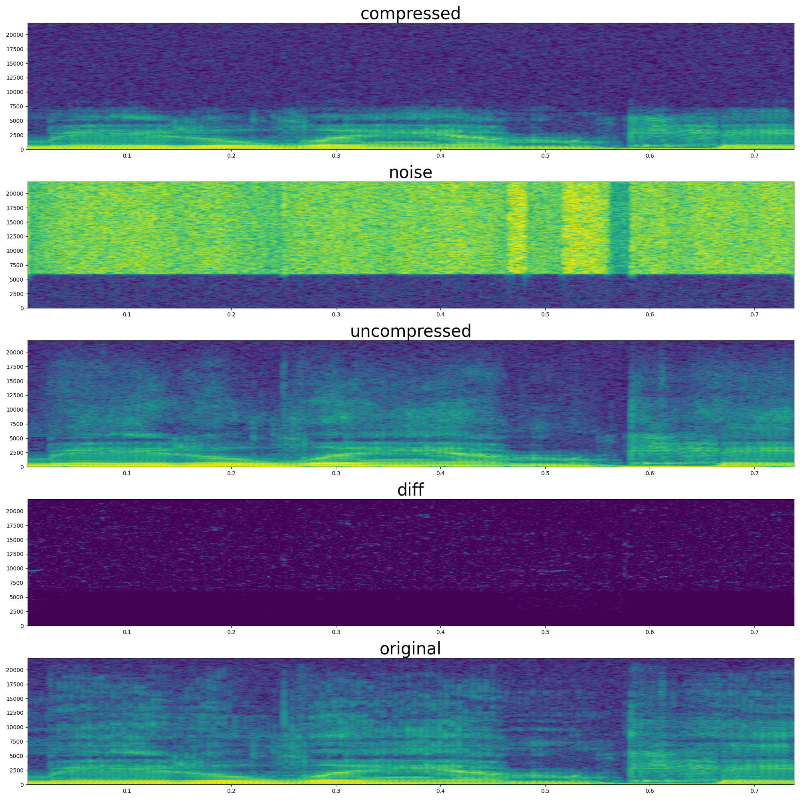

Introduction

There is a site called Pink Trombone — a browser-based vocal tract simulation where you can drag around control points with your mouse and hear bizarrely lifelike vocal sounds. There’s no text, no phonemes. Just a simple simulation of airflow through a deformable tube that resembles the human vocal tract. As you drag the glottis slider or reshape the oral cavity, the sound changes. And if you’re patient — and precise — you can get it to say vowel-like sounds, or even whole syllables.
This simulator inspired a research question: could we train a neural network to automatically control this simulated vocal tract to generate intelligible speech? That is, instead of manually manipulating sliders, can a machine learn to shape the simulated vocal tract in a way that produces coherent speech? This question became the basis for an investigation into hybrid speech synthesis — a method that combines deep learning with physical models to produce speech through a controllable, differentiable physical simulation.
How Humans Speak
Understanding how humans produce speech provides crucial context for modeling it computationally. Unlike conventional speech synthesis systems that directly predict audio waveforms or spectrograms, human speech is the emergent result of a physical process. It starts with airflow from the lungs, which is shaped by the glottis and further modified by the geometry of the vocal tract.
The glottis — the opening between the vocal folds — plays a central role. When the vocal folds are brought close and set into vibration, they produce a periodic pressure source, creating voiced sounds such as vowels. When the folds are apart and stationary, the airflow is unmodulated, leading to voiceless sounds like fricatives (e.g., “s” or “f”).
This sound source then propagates through the vocal tract, which includes the throat, mouth, and nasal passages. The configuration of these structures acts as a dynamic filter, amplifying or attenuating specific frequency components based on its geometry. This filtering effect, governed by the resonant properties of the vocal tract, gives rise to the acoustic qualities of different phonemes.
From a modeling perspective, the key insight is that speech is not generated by manipulating acoustic properties directly but by controlling muscle movements that shape the tract. Traditional deep learning models for speech synthesis — such as WaveNet or Tacotron — bypass this by directly predicting waveform amplitudes or spectrogram features. While effective, these models do not mirror the human production mechanism and are computationally intensive due to the need to predict 44,100 audio samples per second for a high-fidelity, CD-quality audio.
Simulating a Vocal Tract: The Digital Waveguide
Simulating the vocal tract digitally isn’t a new idea. There’s a long history of simulating speech production using physics-inspired approaches, especially for articulatory synthesis. One particularly efficient approach is based on digital waveguides. To model the vocal tract physically, we rely on the theory of wave propagation in tubes. The continuous wave equation governs how sound pressure propagates through a medium:
\[ \frac{\partial^2 p(x, t)}{\partial t^2} = c^2 \frac{\partial^2 p(x, t)}{\partial x^2} \]
where (p(x, t)) is the sound pressure at position (x) and time (t), and (c) is the speed of sound in air.
This equation can be solved numerically by discretizing both time and space. The digital waveguide model represents the solution as the sum of two discrete traveling waves — one moving rightward \((p_r(n))\), and one leftward \((p_l(n))\):
\[ p(x, nT) = p_r(n) + p_l(n) \]
In Python, this simply can be represented as two n-length lists, where each floating-point list element is the magnitude of the sound pressure.
Each segment of the vocal tract is modeled as a tube with a specific cross-sectional area. When waves travel through segments with differing cross-sectional areas (such as in the vocal tract), partial reflections occur at each junction between segments. These reflections happen due to the mismatch in acoustic impedance, which depends directly on the cross-sectional area. At each junction, the reflection coefficient \(r\) is defined by the relative difference of adjacent cross-sectional areas \(A_i\) and \(A_{i+1}\):
\[ r = \frac{A_i - A_{i+1}}{A_i + A_{i+1}} \] In this work, a deep learning model is predicting the diameter of the cross-sections of each tract segment.
This reflection coefficient determines how much of the wave is reflected back and how much continues forward. We calculate the outgoing pressures \((p^-)\) at a junction from the incoming pressures (\(p^+\)) using these reflection coefficients:
\[ \begin{aligned} p_i^- &= p_{i+1}^+ + r(p_i^+ - p_{i+1}^+) \\ p_{i+1}^- &= p_i^+ + r(p_i^+ - p_{i+1}^+) \end{aligned} \] With this one equation, we can calculate the next new sound pressures as they propagate through the digital waveguide. This digital waveguide, as said previously, is simply represented as two lists in Python. We will use this equation as is in our code to do the simulation.
Through these discretized equations, the digital waveguide captures the physics of wave reflections and transmissions, allowing a somewhat realistic simulation of a vocal tract. This is only glimpse into how digital waveguide work, for a more complete explanation please read Jack Mullen’s PhD thesis: Physical Modelling of the Vocal Tract with the 2D Digital Waveguide Mesh
Method

Our hybrid speech synthesis system integrates a digital waveguide simulation with a deep neural network. The method has three primary components: (1) glottal source, (2) neural network prediction of vocal tract diameters, and (3) digital waveguide simulation driven by predicted diameters.
Glottal Source
A purely digital waveguide based vocal tract alone isn’t sufficient to simulate realistic speech because the vocal folds (glottis) play a crucial role in generating the raw sound and adding energy into the system. The glottis itself is particularly important for voiced sounds like vowels. However, full glottal modeling is complex and would typically require a dedicated sub-network or parametric model (e.g. glottal flow models). For the sake of keeping things simple for this blog post, we introduce a gross oversimplification: the glottal source primarily contributes to low-frequency energy (under ~6kHz), while higher-frequency components are produced by the tract.
This is based on the assumption that voiced sounds (vowels) primarily occupy lower frequencies, which are heavily influenced by glottal vibration, while voiceless sounds (like ‘s’ or ‘f’) often appear as white noise in higher frequencies (in fact, the glottis itself is usually not able to vibrate more that ~1100Hz source). This assumption allows us to bypass complex deep learning methods (like WaveGlow a neural network-based vocoder from 2018) for glottal prediction, focusing instead on predicting only the higher frequencies with the digital vocal tract.
Thus, we extract the 0–6kHz band from the original audio to serve as a surrogate glottal source and use white noise as a high-frequency excitation input to the digital waveguide.
Hybrid Speech Synthesis
We use a neural network to predict the tract diameters. The input to this neural network is the mel-spectrogram, from which it predicts the tract diameters. These diameters directly influence the reflection coefficients and thus determine the resonance and filtering properties of the simulated vocal tract.
To be able to output pressure, we need to input pressure (or, more precisely, energy) to the simulated tract. To do so, we feed white noise into the digital waveguide. This white noise serves as a neutral input (same way the lung puts pressure/energy into the vocal tract) that is shaped by the predicted vocal tract diameters.
The final synthesized audio is created by adding together the original 0-6kHz audio (representing the glottal output) and the high-frequency audio generated by the digital waveguide simulation.
Training Loss
Backpropagation is performed through both the neural network and the digital waveguide, enabling end-to-end learning of a system that physically models speech synthesis. The training loss uses a Mean Squared Error (MSE) loss between the spectrograms of the original and generated audio, alongside an L1 loss for the raw audio wave values:
\[ \mathcal{L} = \text{MSE}(\text{Spec}_{original}, \text{Spec}_{generated}) + \lambda \cdot \text{L1}(\text{Audio}_{original}, \text{Audio}_{generated}) \]
where \(\text{Spec}_{\text{orig}}\) and \(\text{Spec}_{\text{gen}}\) are the spectrograms of the original and generated audio respectively, and \(\text{Audio}_{\text{orig}}\), \(\text{Audio}_{\text{gen}}\) are the raw waveforms. The hyperparameter \(\lambda\) balances the two loss components.
Parallelizing the Digital Waveguide
A major challenge in using a traditional digital waveguides for high-fidelity audio synthesis is that they compute wave propagation sequentially, timestep by timestep. This means that generating one second of audio at a sampling rate of 44.1kHz, we would need to execute a “for loop” of 44,100 sequential steps. This makes digital waveguides computationally slow on parallel hardware such as GPUs. The issue is exacerbated that we would have to do backpropagation through 44,100 steps, which causes out of memory issues and the training would not be even possible.
To address this, we exploit the linearity of the wave equation: each individual input to the vocal tract simulation can be treated independently. Because wave propagation in air interfere additively, the total response of the system to a sequence of inputs can be computed as the sum of the system’s response to each input individually. In our case, this means that the total output from the vocal tract can be expressed as the sum of outputs resulting from each individual input sample.
Thus, we can parallelize the simulation by treating each input excitation (e.g., an impulse at a given time) as an independent event. Rather than simulating the tract state step-by-step over time, we simulate how each input sample propagates through the vocal tract independently. Since the system is linear, we can simultaneously compute these responses, and after running these independent simulations, the total output can simply be obtained by adding up the contributions from each input sample. This reframing transforms the process from a time-ordered simulation into a parallel computation over independent events.
Due to energy losses from reflections and boundary conditions (e.g., at the mouth or nasal cavity), the influence of each input to the vocal tract decays rapidly. In practice, this means that after a few dozens of simulation steps, the amplitude of an input is so small that it is no longer significant to the output, and thus we can ignore it. We can use this to our advantage and limit the number of simulation steps. By limiting each simulation to a small, finite number of steps, roughly corresponding to the length of the vocal tract (plus a few additional steps), we ensure the computation remains efficient.
In short, parallelization is achieved by independently computing wave propagation for all input samples in parallel and then summing their contributions. This parallelizing approach makes a physical digital wave simulation feasible on modern GPUs. On top of this, all previously described steps are differentiable, thus making an end-to-end training possible.
Results
To evaluate the proposed method, we conducted experiments comparing three forms of audio:
- The original full-bandwidth (44.1kHz sampling rate) speech audio.
- A version filtered to only include 0–6kHz frequencies, simulating a simplified glottal source.
- The final reconstructed signal, where the neural network predicts vocal tract shapes and the digital waveguide generates high-frequency content (6–20kHz), which is then combined with the glottal source (0–6kHz).
Below, we present several examples from the evaluation set:




Qualitatively, the original audio exhibits the full dynamic range of natural speech. In contrast, the glottal source audio, while retaining the overall pitch and voicing, lacks clarity — it sounds muffled due to the absence of higher-frequency resonances. The reconstructed audio shows a clear improvement over the glottal source: it restores consonant sharpness and it is no longer muffled, necessary for intelligibility and naturalness. This suggests that the learned control over the waveguide-based vocal tract can effectively reintroduce the quality lost in the glottal-only signal. Even though the simulation focuses only on high frequencies, it provides sufficient structure to restore intelligibility of the audio.
| Audio Type | Example 1 | Example 2 |
|---|---|---|
| Original Audio | ||
| Glottal Source (0–6kHz) | ||
| Reconstructed Audio |
| Audio Type | Example 3 | Example 4 |
|---|---|---|
| Original Audio | ||
| Glottal Source (0–6kHz) | ||
| Reconstructed Audio |
Since we are predicting tract diameters, we can also visualize it with an animation:
Interestingly, during silent moments of the speech, the tract vibrates/jitters. This is probably because there is no supervision signal for the silent parts during training and jittering is not penalized in the loss function.
Discussion
The reader at this point could rightfully ask the question: what is the practical significance of this method? After all, the system starts from high-fidelity audio, downsamples it, and reconstructs it through a complex process.
As previously noted, this blog post is a simplified version of the proposed hybrid method. In the intended application, the system would not start from high-fidelity audio but from text. Specifically, from text, we predict a mel-spectrogram and generate a low-frequency glottal source signal (0–6 kHz band) using an off-the-shelf text-to-speach method. This defines a full text-to-speech (TTS) system architecture, as shown on Figure 6.
Producing the glottal source is a challenging task. Physical models of glottal flow are not great in terms of realistic vocal sounds, so a deep learning model is typically required to generate the glottal waveform. However, if we simply use deep learning to directly predict high-fidelity audio from text — as done in methods like WaveNet — we face significant computational challenges. High-fidelity audio requires predicting 44,100 samples per second, making inference memory-intensive and produces high latency.
Thus, a key advantage of hybrid method is a reduced computational load at inference time. While we put a great effort into parallelizing the digital waveguide, in its natural form the waveguide is autoregressive. Thus, for each and every simulation step we instantly get an input. However, this is only great news, if the digital waveguide simulation itself is very fast.
To run the simulation, we only need to keep a small array of numbers in memory (usually an array storing ~100 values), which contains the state of the vocal tract. This small memory footprint allows us to easily run the digital waveguide simulation on cpu which is super-fast for iterative computations (the waveguide simulation during inference is basically a ‘while’ loop).
Moreover, the neural network that predicts tract diameters can also be fast. Human vocal tract movements are relatively slow (due to inertia) compared to audio sampling rates, meaning that tract diameter updates can occur much less frequently (e.g., every few milliseconds) without degrading speech quality.
Thus, using a hybrid approach shifts the computational burden, where the deep learning models predict slowly changing control parameters, while a fast physical simulator generates high-fidelity audio needed for natural-sounding audio.

Acknowledgement
This work was done during my BSc thesis under Csaba Zainkó’s supervision. This was later turned into an article (https://ieeexplore.ieee.org/document/8906280) coauthored by Csaba Zainkó and Géza Németh.
Citation
@article{englert2019wavetract,
title = "Controlling a Vocal Tract With a Neural Network",
author = "{Englert, Brunó B.} and {Zainkó, Csaba} and {Németh, Géza}",
booktitle = "International Conference on Speech Technology and Human-Computer Dialogue (SpeD)",
year = "2019",
}Code
https://github.com/englertbruno/wavetract